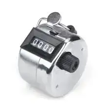

廣田 奈美
博物館の来館者に関する統計データを収集する方法

美術館や文化センターにおける観客分析の重要性は、いくら強調してもしすぎることはありません。しかし、そのような分析を効率的に行うためには信頼できる統計データの収集が不可欠です。
しかし、匿名の聴衆からデータを取得することはかなりの困難を伴います。.
数年前、客室乗務員が背中に片手を隠して乗客に挨拶することがよくありました。これは単なる礼儀作法ではなく、データ収集のための目立たない方法でした。実際には、客室乗務員はこのような手動式の乗客カウンターを隠していたのです。
デジタル時代になってから、多かれ少なかれ、あらゆる種類の巧妙な手口が情報収集に使われてきました。中には倫理的に疑わしいものもあり、その悪評により、他の合法的でプライバシーに配慮した手法は影に隠れてしまいました。
美術館の来館者に関するデータ収集の難しさ
美術館の場合、入場者数を把握するのはおそらく最も簡単なことでしょう。販売したチケットの数を数えればいいのです。
しかし、そこからがややこしくなります。
美術館の受付係がチケットを販売する際、来館者に出身国や郵便番号を尋ねることは珍しくありません。しかし、これは来館者にとって迷惑であるだけでなく、スタッフにとっても、特に混雑時には余計な手間となります。
さらに、この方法では、美術館の館長にとって最も重要なデータのいくつかを把握することができません。来館者の滞在時間は？展覧会をどう見たか？どの作品に最も興味を持ったか？
博物館来館者のデータ収集ツールとしての音声ガイド
デジタル音声ガイドは、美術館の来館者に優れたサービスを提供しながら、データを収集する独創的で、押しつけがましくない方法です。
Nubartの音声ガイドは、技術的にはPWA（ウェブアプリケーション）です。つまり、訪問者はモバイルブラウザを使って音声ガイドのコンテンツにアクセスします。ブラウザは貴重な匿名データへの自動的なアクセスや収集を可能にし、利用者を煩わせることはありません。登録やログインがなければ、ユーザーの身元、電子メールアカウント、電話番号にアクセスすることは不可能で、プライバシーが守られます（もちろん、Nubart音声ガイドへのアクセスには登録は必要ありません）。
例えば、ブラウザの情報を使って、来館者の出身国や母国語を特定することができ、これは博物館のマーケティング・アプローチにとって不可欠な情報です。
Nubartが収集したデータはすべて匿名で集計されます。また、統計データ・ダッシュボードは社内で開発されたものです。 Nubart のオーディオガイド製品群は、Google Analyticsやその他の第三者の統計情報サービスを使用していません。 このことは訪問者のプライバシーを守るために非常に重要です。データ収集のためにサードパーティのクッキーを使用しないことにより、Nubartは大規模な技術企業が個人の情報を知り、特定し、利益を得ることに貢献していません。
従来のオーディオガイド（つまりデバイス）でも、利用データを取得できるものもありますが、出身国は決して取得できません。
Nubartが博物館や展示センターに提供する統計レポートには、施設内でのおおよその滞在時間など、取得に複雑なアルゴリズムを必要とするデータも含まれています。
Nubartの統計ダッシュボードはインタラクティブです。数値のクリックやクリックの解除、ズームインやズームアウトなど、さまざまな機能が利用できます。
Nubartは、提供するグラフの改善と拡大に継続的に取り組んでいます。現在、Nubartは以下の情報を提供しています。
- 音声ガイド利用者数
- 出身国
- 国別オーディオガイド利用
- 利用者の母国語
- 言語別オーディオガイド利用
- 1日の利用者数
- 日別オーディオガイド利用
- 時間帯別利用者数
- 各時間帯別オーディオガイド利用
- ユーザーが使用するデバイス（オペレーティングシステムとブラウザ）
- 館内でのオーディオガイドの利用時間（最初のクリックから最後のクリックまでの時間）
- 聴いたオーディオ・トラック数
美術館の来館者の意見を知るには
これまで、音声ガイドへのアクセスに使用されるブラウザによって自動的に収集される統計データについて言及してきました。しかし、年齢や展覧会についての意見など、来館者に直接尋ねなければ得られないデータもあります。
美術館の来館者からフィードバックを得る従来の方法は、以下のように、あまり満足のいくものではありません。
対面式アンケート: 高価な委託会社を通すにせよ、館内スタッフの力を借りるにせよ、出口にアンケートを持った人を配置し、展覧会を見終えた来館者にインタビューをする美術館もある。しかし、来館者は数時間立ちっぱなしで疲れており、もう帰りたがっている。また、美術館の担当者の前で批判的なことを述べることに抵抗を感じる人も多いだろう。
フィードバック端末: 対面式アンケートの自動化バージョンで、空港やその他の公共の場でよく見られる。多くの質問に対する詳細な回答を記録するためのキーパッドを備えたものもある。また、単に3つの顔文字（「好き」、「普通」、「嫌い」）を表示し、訪問者が通過する際にタップするものもある。何時間も立ちっぱなしで疲れている観光客はわざわざ立ち止まって、使いたがらないだろうし、これでは美術館にとっては適切な情報は得られにくい。仮に「ご感想をお書きください」というノートが置いてあっても、多くのお客様は素通り。
さらに、これらの端末のレンタルとメンテナンスには、1台あたり月１万から３万円ほどの経常コストが発生します。
Nubartオーディオガイドは、オーディオガイドの最後にフィードバックフォームを組み込んでいます これにより、美術館見学の最も重要な瞬間のひとつである、ツアーの最後に来館者の注意を引くことができます。 Nubartのオーディオガイドの構造は、特にこの点で有利です。オーディオガイドがタイムラインとして機能し、来館者がスクロールすることで、物理的な空間のルートがバーチャルに再現されるからです。
Nubartのオーディオガイドを聞き終えたとき、来館者はすでに見学を終えています。展覧会に対する全体的な印象はすでにできあがっており、展覧会が喚起した感情、それが熱狂であれ失望であれ、まだ鮮明なのです。
来館者は、外部サイトにリダイレクトされることなく、スマートフォンですでに開いているフィードバック・フォームが目に付きます。来館者は、展覧会を出た後、ホテルに戻る途中、あるいは美術館のカフェテリアで、数秒でこのフォームに答えることができます。また、アンケートは匿名であり、対面式ではないため、遠慮なく、自由に自分を表現することができます。これが約10％という高い回答率の理由でしょう。
Nubartフィードバックアンケートの質問はカスタマイズすることができます。このようなコメントをリアルタイムで美術館のスタッフに自動的にEメールで送信することも可能です。いずれにしても、すべての回答はカスタマーエリアに記録されます。
データ品質も同様に重要である
Nubartのオーディオガイド・カードは、ユニークで識別可能、かつ匿名性の高いQRコードで提供され、現地で来場者に渡されます。これにより、データの品質と情報価値が保証されます。譲渡不可能なコードであるため、ウェブサイトやソーシャルネットワークで公開することはできません。 Nubartオーディオガイドカードの統計は、実際に当館を訪れた訪問者のみを対象としています。また、フィードバック・フォームは一度しか送信できません。これは嫌がらせやいたずら目的な利用者からデータの質を守るためです。
サービスの一環として、Nubartはデータ・ダッシュボードとフィードバック・フォームの両方をすべての顧客に無料で提供しています。